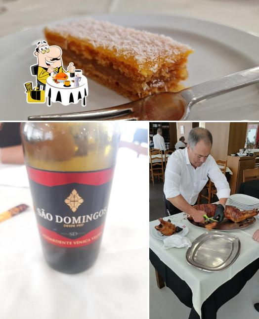
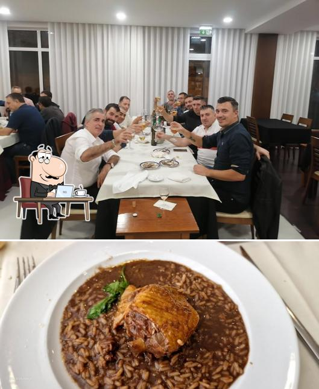

Leitão à Moda da Bairrada
A nossa especialidade de excelência — leitão assado lentamente em forno de lenha, com pele estaladiça e carne macia e suculenta. Um sabor que guarda os segredos da tradição bairradina.
Prato PrincipalPalmeira · Braga · Desde a tradição
Cozinha tradicional portuguesa com alma — o melhor leitão à Bairrada em Braga.

No coração de Palmeira, junto à Avenida do Cávado, o Segredos dos Leitões é um refúgio para quem procura a genuína cozinha portuguesa. Nascemos da paixão pelos sabores que fazem parte da nossa herança — receitas cuidadas, ingredientes frescos e um serviço caloroso que faz sentir cada cliente em casa.
Especializados no célebre leitão à moda da Bairrada, oferecemos também cabidela tradicional e uma seleção de pratos regionais que celebram o melhor que o Minho tem para dar. Uma experiência gastronómica que respeita a identidade portuguesa.
Situados próximos do Santuário do Bom Jesus, recebemos com igual prazer os visitantes de Braga e os seus moradores mais fiéis. A nossa mesa está sempre pronta para vos receber.
Como Chegar"Excellent traditional Portuguese cuisine, good cabidela and fine service with exotic atmosphere"
"Almoço a €15–20 por pessoa, com notas de 4/5 para Comida, Serviço e Atmosfera. Uma relação qualidade-preço excelente para este nível de cozinha tradicional."
"Um dos melhores restaurantes de cozinha tradicional portuguesa que conheço em Braga. O leitão é simplesmente sublime — pele estaladiça, carne no ponto. Serviço atencioso e simpático."
Estamos situados em Palmeira, Braga, de fácil acesso a partir do centro da cidade e das principais vias de acesso.
Para uma experiência inesquecível de cozinha tradicional portuguesa, contacte-nos para reservar a sua mesa. Aceitamos reservas por telefone ou email, e temos capacidade para grupos e eventos especiais.
🔗 Siga-nos no Facebook